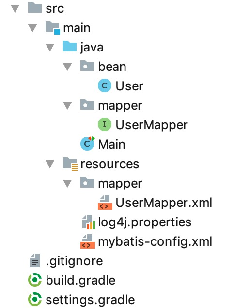

11、事务
本节示例代码在 mybatis-demo-010 。
数据准备
见 数据准备。
user表的默认内容如下：
mysql> select * from user;
+----+--------+----------------+----------+
| id | name | email | password |
+----+--------+----------------+----------+
| 1 | letian | letian@111.com | 123 |
| 2 | xiaosi | xiaosi@111.com | 123 |
+----+--------+----------------+----------+
项目结构
使用 IDEA 创建 gradle 项目，最终结构如下：

事务管理器的配置
在 mybatis-config.xml 中有一行内容如下：
<transactionManager type="JDBC"/>
在 《XML 映射配置文件》 对于 transactionManager 解释如下：
在 MyBatis 中有两种类型的事务管理器（也就是 type=”[JDBC|MANAGED]”）：
JDBC – 这个配置就是直接使用了 JDBC 的提交和回滚设置，它依赖于从数据源得到的连接来管理事务作用域。
MANAGED – 这个配置几乎没做什么。它从来不提交或回滚一个连接，而是让容器来管理事务的整个生命周期（比如 JEE 应用服务器的上下文）。
这里先只关心 JDBC 类型的事务管理器。其实我们之前已经用到了，那就是之前一些章节中出现的sqlSession.commit()。本节再加上 rollback 的示例。
编写 UserMapper 接口
内容如下：
package mapper;
import bean.User;
public interface UserMapper {
/**
* 根据 id 更新密码
* @return 影响的行数
*/
int updateUserPasswordById(User user);
}
编写 UserMapper.xml 映射文件
<?xml version="1.0" encoding="UTF-8" ?>
<!DOCTYPE mapper PUBLIC
"-//mybatis.org//DTD Mapper 3.0//EN"
"http://mybatis.org/dtd/mybatis-3-mapper.dtd">
<mapper namespace="mapper.UserMapper">
<!--updateUserPasswordById-->
<update id="updateUserPasswordById" parameterType="bean.User">
UPDATE blog_db.user
SET password=#{password}
WHERE id=#{id}
</update>
</mapper>
示例1
在 Main 类中增加示例，修改id为2的用户的密码，并回滚：
@Test
public void test_01() throws IOException {
SqlSession sqlSession = getSqlSession(false);
UserMapper userMapper = sqlSession.getMapper(UserMapper.class);
User user = new User();
user.setId(2L);
user.setPassword("123456");
try {
int result = userMapper.updateUserPasswordById(user);
log.info("result: {}, user: {}", result, user);
sqlSession.rollback(); // 回滚。若之前没有insert、delete、update，则不进行回滚
} finally {
sqlSession.close();
}
}
运行结果：
INFO [main] - result: 1, user: User(id=2, name=null, email=null, password=123456)
因为事务被回滚了，所以修改并未生效，user表中的内容无变化：
mysql> select * from user;
+----+--------+----------------+----------+
| id | name | email | password |
+----+--------+----------------+----------+
| 1 | letian | letian@111.com | 123 |
| 2 | xiaosi | xiaosi@111.com | 123 |
+----+--------+----------------+----------+
示例2
在 Main 类中增加示例，修改id为2的用户的密码，并回滚：
@Test
public void test_02() throws IOException {
SqlSession sqlSession = getSqlSession(false);
UserMapper userMapper = sqlSession.getMapper(UserMapper.class);
User user = new User();
user.setId(2L);
user.setPassword("123456");
try {
int result = userMapper.updateUserPasswordById(user);
log.info("result: {}, user: {}", result, user);
sqlSession.rollback(true); // 强制回滚
} finally {
sqlSession.close();
}
}
这段代码和示例1类似，运行结果和示例1相同。
唯一不同的是，sqlSession.rollback(true)多了参数true。true的作用是强制回滚，也就是即使之前没有insert、update、delete操作，也会执行回滚操作。不过这个没什么必要。
示例3
在 Main 类中增加示例，修改id为2的用户的密码，并提交事务：
@Test
public void test_03() throws IOException {
SqlSession sqlSession = getSqlSession(false);
UserMapper userMapper = sqlSession.getMapper(UserMapper.class);
User user = new User();
user.setId(2L);
user.setPassword("123456");
try {
int result = userMapper.updateUserPasswordById(user);
log.info("result: {}, user: {}", result, user);
sqlSession.commit(); // 提交
} finally {
sqlSession.close();
}
}
运行结果：
INFO [main] - result: 1, user: User(id=2, name=null, email=null, password=123456)
查看user表内容，密码被改：
mysql> select * from user;
+----+--------+----------------+----------+
| id | name | email | password |
+----+--------+----------------+----------+
| 1 | letian | letian@111.com | 123 |
| 2 | xiaosi | xiaosi@111.com | 123456 |
+----+--------+----------------+----------+
示例4
在 Main 类中增加示例，修改id为2的用户的密码，并强制提交事务：
@Test
public void test_04() throws IOException {
SqlSession sqlSession = getSqlSession(false);
UserMapper userMapper = sqlSession.getMapper(UserMapper.class);
User user = new User();
user.setId(2L);
user.setPassword("456789");
try {
int result = userMapper.updateUserPasswordById(user);
log.info("result: {}, user: {}", result, user);
sqlSession.commit(true); // 强制提交
} finally {
sqlSession.close();
}
}
这里的强制提交和之前的强制回滚中的强制是一个意思。
运行结果：
INFO [main] - result: 1, user: User(id=2, name=null, email=null, password=456789)
查看user表内容，密码被改：
mysql> select * from user;
+----+--------+----------------+----------+
| id | name | email | password |
+----+--------+----------------+----------+
| 1 | letian | letian@111.com | 123 |
| 2 | xiaosi | xiaosi@111.com | 456789 |
+----+--------+----------------+----------+